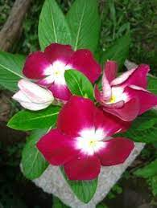

Pagina principal
Animales en Honduras
Parque nacional la tigra
Biosfera del rio platano
Plantas en Honduras
La necesidad de una lista de las plantas de Honduras se a hecho sentir desde hasce mucho tiempo y con esta dar una idea del mundo vegetal hondureño botanicamente desconocido en su mayor parte razon por la que hace necesaria su publicacion y que se espera sea de utilidad existe tambien la necesidad de efectuar mas exploraciones botanicas para el aumento de conocimientos y especinemes de nuestra flora en especial aquellos vegetales que puedan tener importancia economica; como alimento, en la medicina y las industrias. Son pocos los departamentos de la República de Honduras que todavia no an sido explorados botanicamernte, entre ellos: Islas de la Bahía, Colón, Gracias a Dios, Yoro y gran parte de Olancho.
